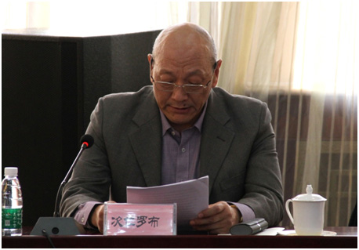

次仁罗布在“中国民族语文翻译局成立60周年座谈会”上的发言

尊敬的各位领导、各位嘉宾，同志们，朋友们：
大家好！悠悠六十载，漫漫译林路，弹指一挥间，翻译局已经走过了六十年的发展历程。作为一名见证我局发展的翻译工作者，我感到无尚光荣。今天，能在这里与各位领导和同志们在一起，分享这辉煌的时刻，激动之情溢于言表。在此，我谨代表翻译局7个语种的民族语文翻译人员，代表全局各族职工，衷心感谢各级领导的亲切关怀，感谢翻译局圆了我们的翻译梦，感谢大家庭里每位成员的以诚相待。
我们的国家是一个多民族、多文化、多语言的国家。党和国家始终强调各民族和谐发展，主张各民族文化和而不同，致力于构筑你中有我、我中有你的中华民族命运共同体。在民族政策光辉的照耀下，老一辈党和国家的领导人，倾国家之力，调动全国最顶尖的民族语文学者和各民族的文化精英，在北京成立了翻译局。自此，翻译局肩负起神圣而重要的使命，全心全意为党和国家的民族工作大局服务，也充分体现了党和国家对少数民族的关怀和对民族语言文字的尊重。
1981年，我与翻译局结下了不解之缘，有付出，更有收获。记得刚入职时，我听到大家用多种民族语言交谈，虽然听不懂大家在谈些什么，但感受着其乐融融的氛围，我由衷地感觉到，这个新起点是那么的美好。在这里，我们得到了无微不至的关怀。每逢党和国家重大会议筹备和召开期间，党和国家领导人总是在百忙之余慰问大家，亲切温和；每次接到紧急任务，上级领导总是陪伴左右，谋划布局。这些看似小事，做一件、两件不难，做一年、两年不难，但长期坚持做下来，便暖了人心，暖了民族大家庭。
翻译局的发展，离不开党和国家、国家民委党组以及各级机关的关怀和呵护，也正是在民族政策的不断发展下，翻译局的事业才取得了如此骄人的成就。工作至今，我深刻领会到，民族语文翻译不是一项简单的工作，更不是简单的文字拼凑。它需要扎实的语言基础和文化底蕴，需要严谨求实和精益求精的治学态度。我与一起共事的前辈、同事们一道，心怀对党和国家的绝对忠诚，对民族文化的无限热爱，一步步完善翻译工作规程，一步步推动翻译的规范，一步步把民族语文翻译事业推向高点。有人不理解，认为我们的工作枯燥乏味。其实不然。看似重复的工作，时时都有创新，因为时代在发展；看似机械地敲打键盘，其中却饱含着翻译者的思考与雕琢。经过不懈的坚持和多年的坚守，我们圆满完成了历届历次全国党代会、人代会、政协会议文件的翻译和同声传译任务；翻译了一大批经典作品，既有马列著作、党和国家领导人著作，也有国家法律法规、文件文献；出版发行了多本词典工具书，并且积极研发辅助翻译软件。这些工作，不仅得到上级的肯定，更是得到各族人民的褒奖。作为翻译局的一分子，我以此为荣，感到欣慰。
一滴水，只有放进大海里，才永远不会干涸；一个人，只有当他把自己和集体的事业融合在一起，才最有力量。我们这个大家庭里，各族兄弟姐妹相互关爱，共同织就了民族大团结的美丽画卷。翻译局的同志们由十几个民族组成。每位同志都深深懂得，各民族的团结是我们工作胜利的保证。在工作和生活中，每每遇到困难，总有人乐于伸出援手，为你排忧解难；每每遭受挫折，总有人愿意撑起一把伞，为你挡风遮雨。就这样，大家在工作中互助共勉，成为良师益友；在生活中互帮同乐，成为兄弟姐妹。我们用行动诠释了“中华民族一家亲，同心共筑中国梦”的美好愿景。此时此刻，我的脑海里再次浮现出上级领导一次次关怀慰问的温馨画面，浮现出同事们挑灯夜战的感人画面，浮现出兄弟姐妹们欢声笑语的喜庆画面。7个语种，群策群力，为传承民族语文翻译事业不懈努力；7种情怀，矢志不渝，为发扬优秀民族文化不遗余力。
雄关漫道真如铁，昨天的辉煌已经深深镌刻在翻译局的历史记忆中；而今迈步从头越，我们将会把昨天的成绩做为今后工作的新起点。牢记“讲政治，顾大局，一丝不苟，甘于奉献”的优良传统，把翻译局人有容乃大的精神发扬光大，把“干一行、爱一行、钻一行”的品质传承下去。
雷锋同志曾在日记中自问：“如果你是一颗最小的螺丝钉，你是否永远坚守着你生活的岗位？”我想说：“我愿意做一颗小小的螺丝钉，永远坚守民族语文翻译事业。”
谢谢大家。